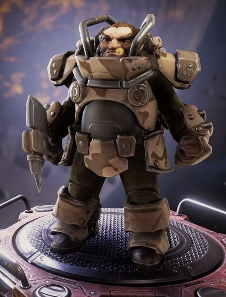

"Qui a besoin de gadgets ou d'astuces sophistiquées comme la vitesse quand on peut simplement appliquer une puissance de feu colossale à n'importe quel problème ? C'est ça, l'esprit du Soldat."
— Description de la classe
L'équipement du Soldat est presque entièrement composé d'armes à projectiles, avec quelques armes à feu pour infliger davantage de dégâts de zone.
| Sous-Classes | Arme de départ | Bonus de bases |
|---|---|---|
| Le spécialiste des armes | Minigun Alimenté "Tempête de Plomb" |
|
| Le Mastodonte | Revolver Lourd "Bulldog" |
|
| L'Artilleur Lourd | Canon Automatique Lourd "Thunderhead" |
|